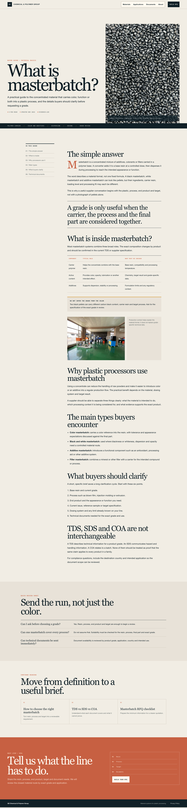
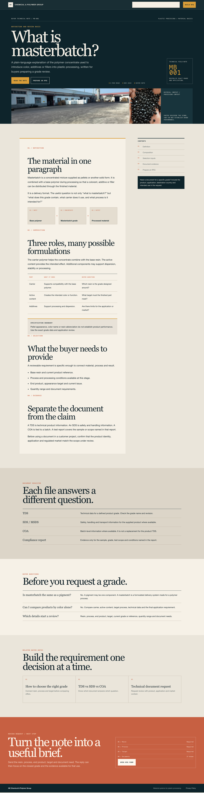
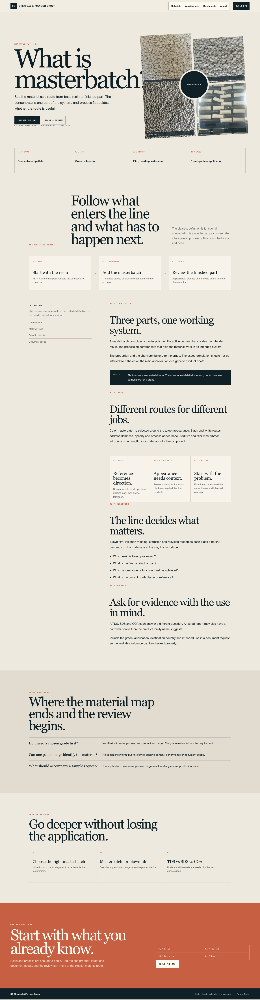

Support page system / Three directions

最接近首页的编辑手册感。大幅标题、左侧目录、首字下沉、图文带和杂志式正文，适合作为品牌主力文章模板。

更像一份采购技术档案。深色刊头、编号、右侧摘录卡和文档登记表更突出，适合 TDS、SDS、质量问题和选型文章。

最强调视觉解释。四宫格材料样本、工艺流程和编号卡片让知识页更容易扫读，适合什么是色母粒、应用和选型主题。